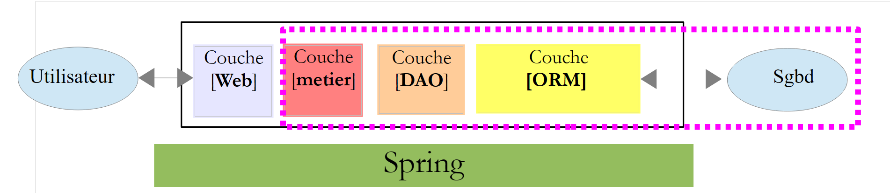

1. Introduction
Le PDF de ce document est disponible |ICI|.
Nous nous proposons ici d'introduire à l'aide d'exemples les notions importantes de ASP.NET MVC, un framework Web .NET qui fournit un cadre pour développer des applications Web selon le modèle MVC (Modèle – Vue – Contrôleur).
La compréhension des exemples de ce document nécessite peu de pré-requis. Seules des connaissances de base du langage C# sont nécessaires. On pourra les trouver dans le document Introduction au langage C# à l'URL [http://tahe.developpez.com/dotnet/csharp]. Une étude de cas est proposée pour mettre en pratique les connaissances acquises sur ASP.NET MVC. Elle utilise l'ORM (Object Relational Mapper) Entity Framework. Cet ORM est présenté dans le document Introduction à Entity Framework 5 Code First disponible à l'URL [http://tahe.developpez.com/dotnet/ef5cf].
Les divers exemples de ce document sont disponibles à l'URL [http://tahe.developpez.com/dotnet/aspnetmvc] sous la forme d'un fichier zip à télécharger.
Ce document est incomplet à bien des égards. Pour approfondir ASP.NET MVC, on pourra utiliser les références suivantes :
- [ref1] : le livre " Pro ASP.NET MVC 4 " écrit par Adam Freeman aux éditions Apress. C'est un excellent livre. Il serait disponible en ligne gratuitement et en français que le présent document n'aurait pas lieu d'être. Je recommande à tous ceux qui le peuvent de s'initier à ASP.NET MVC à l'aide de ce livre. Les codes source des exemples du livre sont disponibles gratuitement à l'URL [http://www.apress.com/9781430242369] ;
- [ref2] : le site du framework [http://www.asp.net/mvc]. On y trouvera tout le matériel nécessaire pour une auto-formation. Une version française est disponible à l'URL [http://dotnet.developpez.com/mvc/ ] ;
- le site de [developpez.com] consacré à ASP.NET [http://dotnet.developpez.com/aspnet/ ].
Le document a été écrit de telle façon qu'il puisse être lu sans ordinateur sous la main. Aussi, donne-t-on beaucoup de copies d'écran.
1.1. La place de ASP.NET MVC dans une application Web
Tout d'abord, situons ASP.NET MVC dans le développement d'une application Web. Le plus souvent, celle-ci sera bâtie sur une architecture multicouche telle que la suivante :
 |
- la couche [Web] est la couche en contact avec l'utilisateur de l'application Web. Celui-ci interagit avec l'application Web au travers de pages Web visualisées par un navigateur. C'est dans cette couche que se situe ASP.NET MVC et uniquement dans cette couche ;
- la couche [métier] implémente les règles de gestion de l'application, tels que le calcul d'un salaire ou d'une facture. Cette couche utilise des données provenant de l'utilisateur via la couche [Web] et du SGBD via la couche [DAO] ;
- la couche [DAO] (Data Access Objects), la couche [ORM] (Object Relational Mapper) et le connecteur ADO.NET gèrent l'accès aux données du SGBD. La couche [ORM] fait un pont entre les objets manipulés par la couche [DAO] et les lignes et les colonnes des tables d'une base de données relationnelle. Deux ORM sont couramment utilisés dans le monde .NET, NHibernate (http://sourceforge.net/projects/nhibernate/ ) et Entity Framework (http://msdn.microsoft.com/en-us/data/ef.aspx ) ;
- l'intégration des couches peut être réalisée par un conteneur d'injection de dépendances (Dependency Injection Container) tel que Spring (http://www.springframework.net/ ) ;
La plupart des exemples donnés dans la suite, n'utiliseront qu'une seule couche, la couche [Web] :
 |
Ce document se terminera cependant par la construction d'une application Web multicouche :
 |
1.2. Le modèle de développement de ASP.NET MVC
ASP.NET MVC implémente le modèle d'architecture dit MVC (Modèle – Vue – Contrôleur) de la façon suivante :
 |
Le traitement d'une demande d'un client se déroule de la façon suivante :
- demande - les URL demandées sont de la forme http://machine:port/contexte/Controlleur/Action/param1/param2/....?p1=v1&p2=v2&... Le [Front Controller] utilise un fichier de configuration pour " router " la demande vers le bon contrôleur et la bonne action au sein de ce contrôleur. Pour cela, il utilise le chemin [Controlleur/Action] de l'URL. Le reste de l'URL [/param1/param2/...] sont des paramètres facultatifs qui seront transmis à l'action. Le C de MVC est ici la chaîne [Front Controller, Contrôleur, Action]. Si le chemin [Controlleur/Action] n'aboutit pas à un contrôleur existant ou une action existante, le serveur Web répondra que l'URL demandée n'a pas été trouvée.
- traitement
- l'action choisie peut exploiter les paramètres parami que le [Front Controller] lui a transmis. Ceux-ci peuvent provenir de plusieurs sources :
- du chemin [/param1/param2/...] de l'URL,
- des paramètres [p1=v1&p2=v2] de l'URL,
- de paramètres postés par le navigateur avec sa demande ;
- dans le traitement de la demande de l'utilisateur, l'action peut avoir besoin de la couche [métier] [2b]. Une fois la demande du client traitée, celle-ci peut appeler diverses réponses. Un exemple classique est :
- une page d'erreur si la demande n'a pu être traitée correctement
- une page de confirmation sinon
- l'action demande à une certaine vue de s'afficher [3]. Cette vue va afficher des données qu'on appelle le modèle de la vue. C'est le M de MVC. L'action va créer ce modèle M [2c] et demander à une vue V de s'afficher [3] ;
- réponse - la vue V choisie utilise le modèle M construit par l'action pour initialiser les parties dynamiques de la réponse HTML qu'elle doit envoyer au client puis envoie cette réponse.
Maintenant, précisons le lien entre architecture Web MVC et architecture en couches. Selon la définition qu'on donne au modèle, ces deux concepts sont liés ou non. Prenons une application Web ASP.NET MVC à une couche :
 |
Si nous implémentons la couche [Web] avec ASP.NET MVC, nous aurons bien une architecture Web MVC mais pas une architecture multicouche. Ici, la couche [Web] s'occupera de tout : présentation, métier, accès aux données. Ce sont les actions qui feront ce travail.
Maintenant, considérons une architecture Web multicouche :
 |
La couche [Web] peut être implémentée sans framework et sans suivre le modèle MVC. On a bien alors une architecture multicouche mais la couche Web n'implémente pas le modèle MVC.
Ainsi, la couche [Web] ci-dessus peut être implémentée avec ASP.NET MVC et on a alors une architecture en couches avec une couche [Web] de type MVC. Ceci fait, on peut remplacer cette couche ASP.NET MVC par une couche ASP.NET classique (WebForms) tout en gardant le reste (métier, DAO, ORM) à l'identique. On a alors une architecture en couches avec une couche [Web] qui n'est plus de type MVC.
Dans MVC, nous avons dit que le modèle M était celui de la vue V, c.a.d. l'ensemble des données affichées par la vue V. Une autre définition du modèle M de MVC est donnée :
 |
Beaucoup d'auteurs considèrent que ce qui est à droite de la couche [Web] forme le modèle M du MVC. Pour éviter les ambigüités on peut parler :
- du modèle du domaine lorsqu'on désigne tout ce qui est à droite de la couche [Web]
- du modèle de la vue lorsqu'on désigne les données affichées par une vue V
Dans la suite, le terme " modèle M " désignera exclusivement le modèle d'une vue V.
1.3. Les outils utilisés
Dans la suite, nous utilisons (septembre 2013) les versions Express de Visual Studio 2012 :
- [http://www.microsoft.com/visualstudio/fra/products/visual-studio-express-for-windows-desktop ] pour les applications de bureau ;
- [http://www.microsoft.com/visualstudio/fra/products/visual-studio-express-for-Web ] pour les applications Web.
Pour installer les dernières versions de ces produits, on pourra utiliser le produit [Web Platform Installer] de Microsoft (http://www.microsoft.com/Web/downloads/platform.aspx ).
Par ailleurs, on utilisera le navigateur Chrome de Google (http://www.google.fr/intl/fr/chrome/browser/ ). On lui ajoutera l'extension [Advanced Rest Client]. On pourra procéder ainsi :
- aller sur le site de [Google Web store] (https://chrome.google.com/webstore) avec le navigateur Chrome ;
- chercher l'application [Advanced Rest Client] :
 |
- l'application est alors disponible au téléchargement :
 |
- pour l'obtenir, il vous faudra créer un compte Google. [Google Web Store] demande ensuite confirmation [1] :
 |
- en [2], l'extension ajoutée est disponible dans l'option [Applications] [3]. Cette option est affichée sur chaque nouvel onglet que vous créez (CTRL-T) dans le navigateur.
1.4. Les exemples
La plupart des exemples d'apprentissage seront réduits à la seule couche Web :
 |
Une fois terminé cet apprentissage, nous présenterons une application Web multicouche :
 |